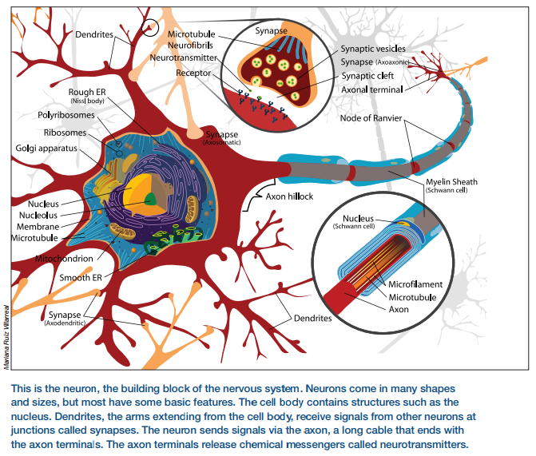
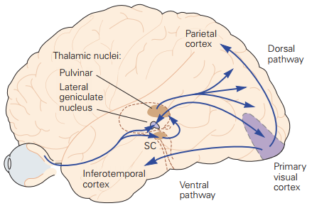
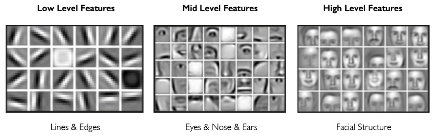
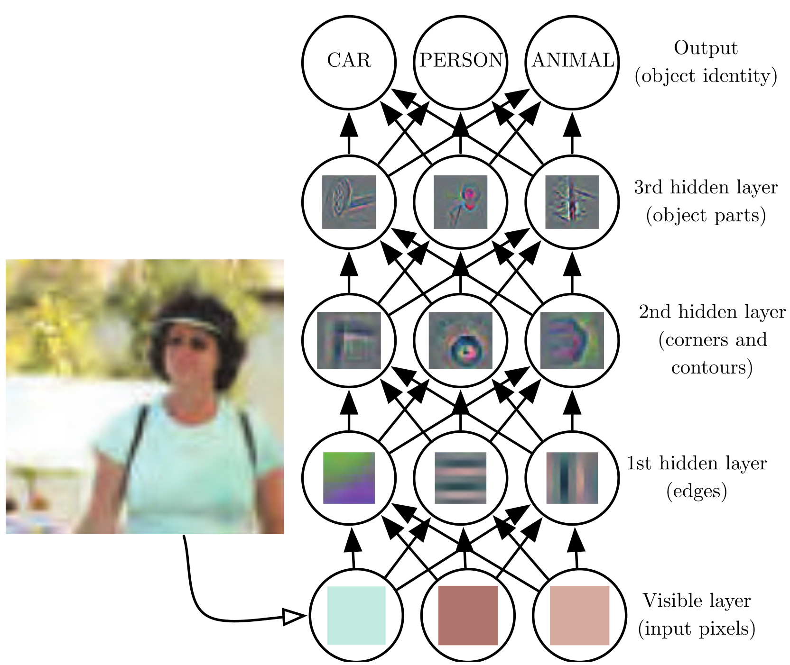
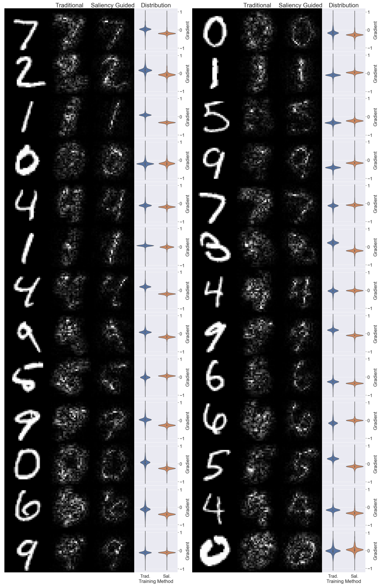
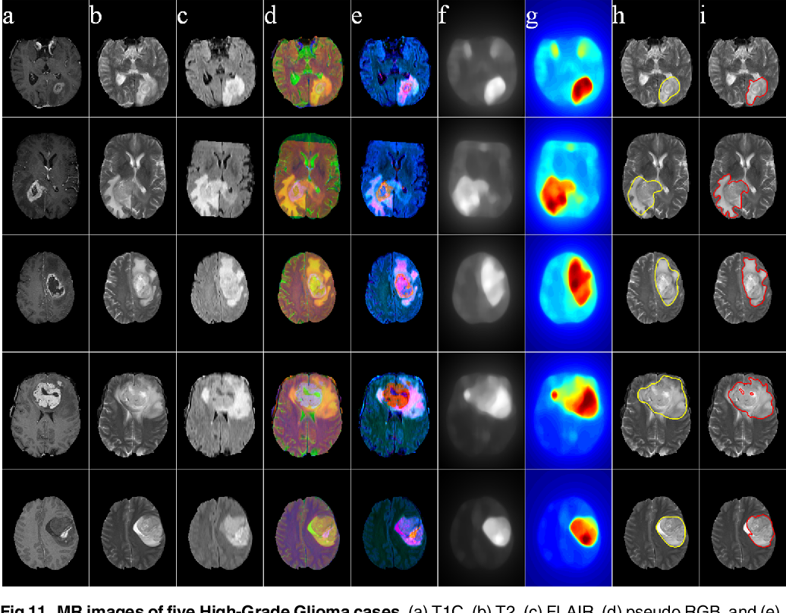

Your browser doesn't support the features required by impress.js, so you are presented with a simplified version of this presentation.
For the best experience please use the latest Chrome, Safari or Firefox browser.
Data mining
Image classification (MNIST)
Ali Zarinkolah
@aligoldenhat on Github
Kiarash Eslampour
A microscopic image of neuron

The structure of neuron

3D Animation of a Neural Network
Visual system

Basic neural

Feature extraction levels


saliency mapping


Saliency Detection Model Using Multi-Channel MRI

Thanks